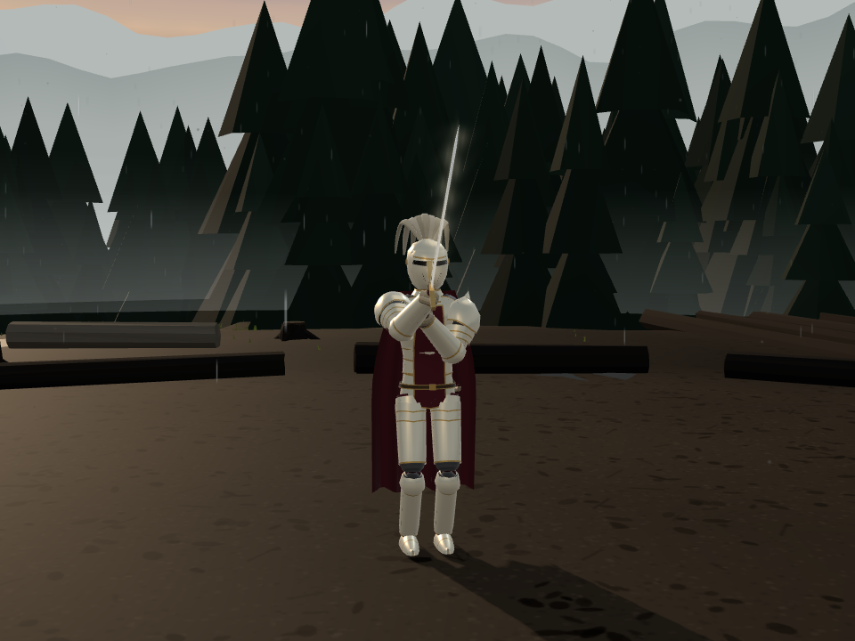
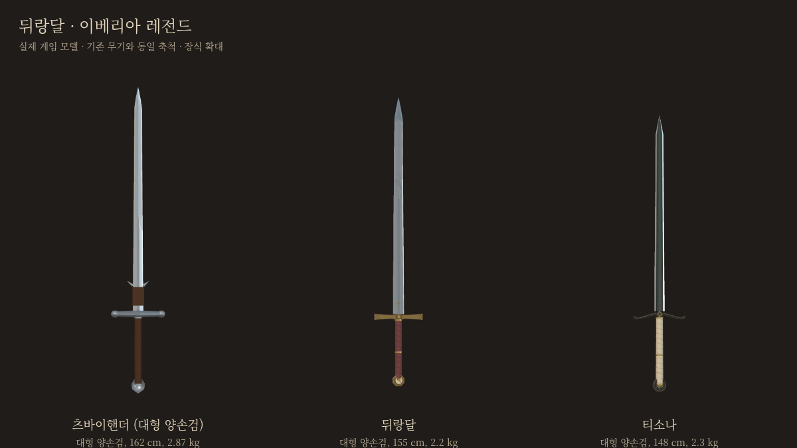
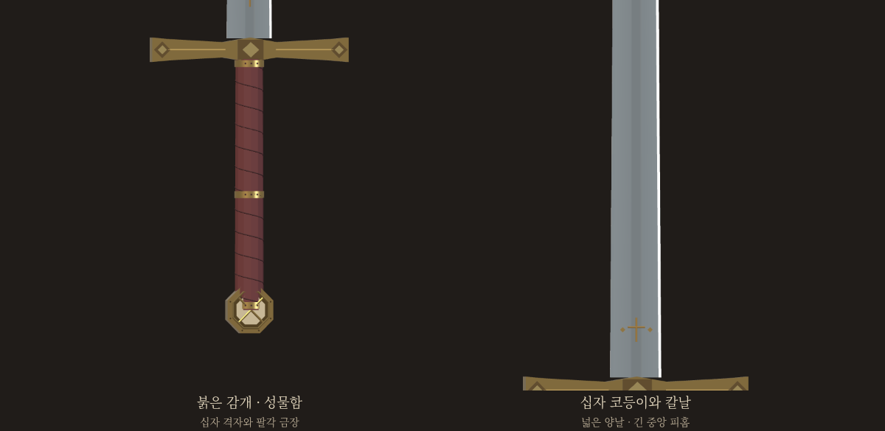

뒤랑달 · 이베리아 레전드
붉은 가죽, 금빛 십자 코등이, 성물을 품은 끝장식. 롤랑의 성검을 새로운 규격으로 만들었습니다.

같은 축척으로 보는 세 자루

뒤랑달의 규격
| 등급 · 유파 | 레전드 · 이베리아 |
|---|
| 종류 | 양날 대형 양손검 |
|---|
| 길이 | 전체155cm · 칼날115.9cm |
|---|
| 무게 | 2.20kg |
|---|
| 양손 간격 | 22cm |
|---|
| 레전드 특성 | 비파손 · 타격 에너지 배율1.2 · 옅은 상아빛 기운 |
|---|
전승을 바탕으로 만든 게임용 창작 치수입니다. 긴 양날과 손잡이 쪽 무게 배분으로, 츠바이핸더보다 휘두르고 거두는 부담을 낮추는 방향으로 설계했습니다.
롤랑이 바위에 내리쳐도 부서지지 않았다는 성검.
금빛 자루에는 성인들의 유물이 봉해져 있다.

처음 후보 원화 보기
halfsword-codex 포크의 검토판 · 그림은 실제 게임 모델을 촬영했습니다.